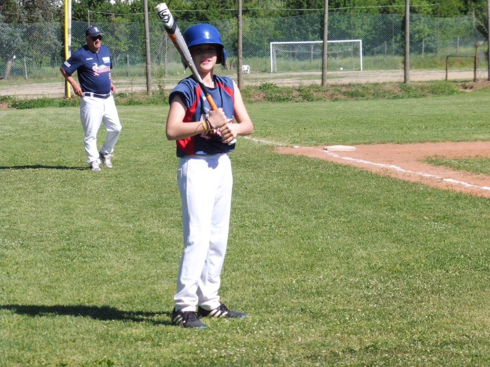
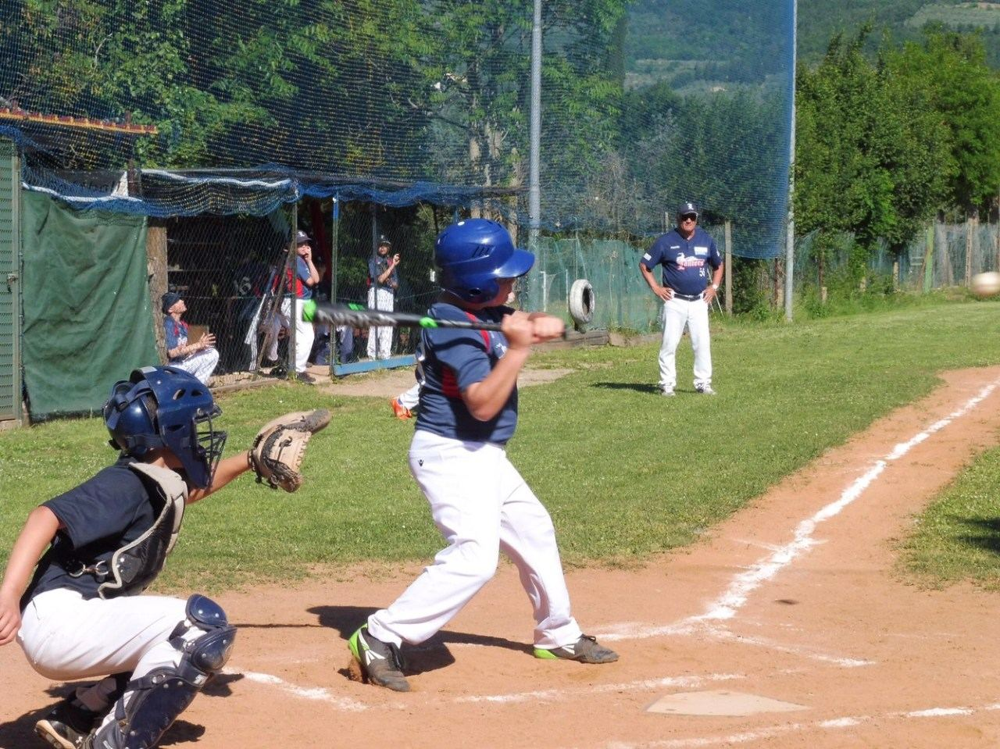
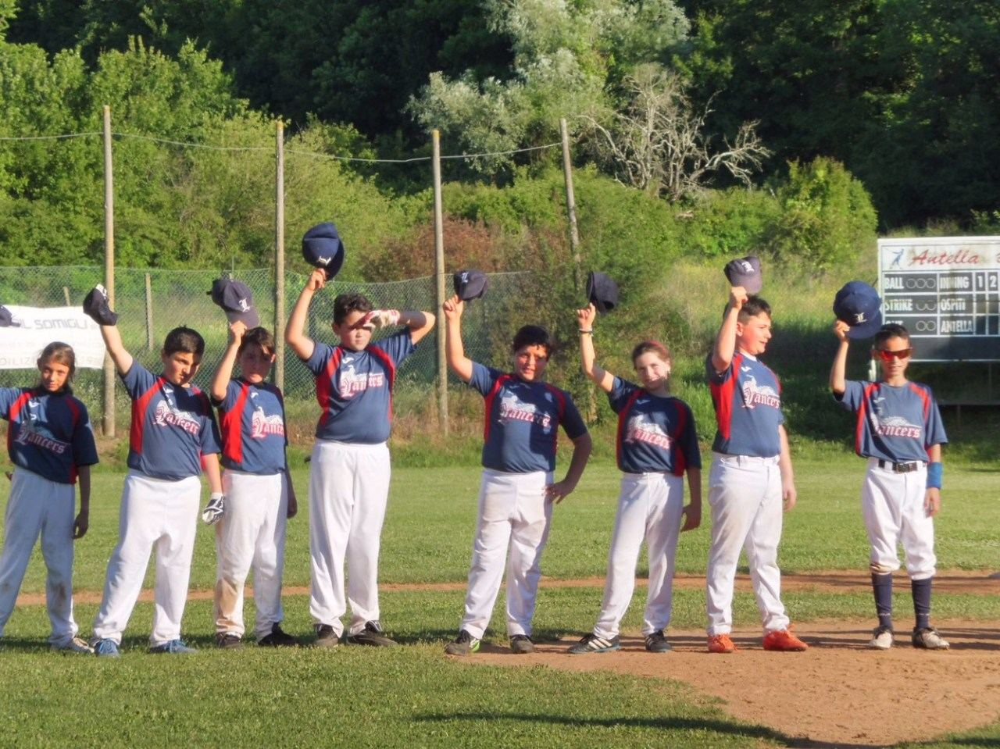

Magnifica prova dei ragazzi di Zalonici, nonostante la sconfitta. Che però è dolce perché il Chianti è uno squadrone, detentore della Winter League, ma i lancerini sfoderano la miglior prestazione dell’anno e lo mettono in seria difficoltà. Una partita analoga a quella vinta sul campo del Padule mesi fa dopo l’inning supplementare, che alcuni ancora ricordano. La nota negativa, ormai solita: la mancanza dell’arbitro. E allora il giudice lo fa un dirigente locale, prendendo qualche decisione, una soprattutto, discutibile. E uso questo eufemismo per rispetto di chi, presente alla partita, ribadiva lo spirito dei Lancers, che vincere o perdere non importa, l’importante è essere una squadra. Ma bisogna pur scrivere la verità, e la verità è che questa decisione capita in un momento decisivo, nel terzo inning, con le squadre sul 2-1, e che un punto segnato in meno e un eliminato in più, in quel momento, pesano eccome. E infine non è un caso che, subito dopo, il Chianti metta a segno quattro punti. Comunque la bella prestazione rimane e, in fondo, questo è quello che conta. Alla fine della gara Zalonici è raggiante e ha parole di elogio per i suoi ragazzi.
Questa i protagonisti della gara: Lorenzo Gianrossi, Alberto Lopez, Paolo Manetti, Silvia Onori, Gabriele Paoli, Alessio Pellegrini, Lorenzo Sarubbi, Lorenzo Scarpulla, Alfredo Signorini, Noemi Vecchi.  
Primo inning 1-0. In quanto fuori casa iniziamo in attacco. Lopez batte e poi arriva in seconda base, poi Pellegrini e Manetti vanno in prima per 4 balls del lanciatore n° 50 ma qui terminano le loro corse e c’è il cambio. Lanciatore Lopez, ricevitore Pellegrini. Il n° 64, promosso in prima base per base-ball, con due rubate si porta in terza e poi sfrutta la battuta del n° 61 e va a punto. Lopez è poi lesto a raccogliere la battuta del n° 52, lancia a Scarpulla in prima base e lo elimina. Ma il meglio deve ancora venire: il n° 57 batte di nuovo e, come in fotocopia, Lopez riprende e lancia a Scarpulla in prima base che lo elimina. Scarpulla, fulmineo, lancia a sua volta a casa base dove Pellegrini elimina il n° 54 che stava per realizzare il punto. In tre anni che seguo il baseball è la prima volta che vedo una doppia eliminazione così nell’under 12!
Terzo inning 4-1. Paoli batte e va in prima. Poi anche Pellegrini batte e l’errata gestione della palla da parte del Chianti frutta il punto di Paoli e porta lo stesso Pellegrini in terza. Ed eccoci al misfatto. Con la mazza si presenta Scarpulla che batte validamente e pertanto Pellegrini corre a punto. La palla è raccolta e lanciata al ricevitore che, per prenderla, deve saltare e quando Pellegrini viene toccato è fuori da casa base. La situazione è solare e si è vista tante volte ma l’arbitro chiama Pellegrini out. La fase di attacco termina con uno sfortunato Signorini che batte ma la palla è raccolta dal lanciatore che lancia in prima base e riesce a eliminarlo. Lanciatore Lopez, ricevitore Pellegrini. I lancerini, forse anche un po’ demoralizzati dall’iniqua decisione subita, incassano i punti dei numeri 64, 61, 50 e 52. Durante questa fase Paoli sostituisce Lopez sul monte di lancio.
Quarto inning 1-2. Vanno a punto Sarubbi e Onori, che avevano raggiunto la prima base per 4 balls e poi hanno sfruttato una gran battuta di Lopez. La fase di attacco termina con la battuta di Scarpulla presa al volo da un avversario. Inning che vede i Lancers addirittura prevalere nel parziale.
Sesto inning 0-4. Vecchi, Onori e Lopez tornano a casa base dopo aver conseguito la prima base per base-ball mentre Paoli dopo aver battuto validamente. Da segnalare Pellegrini che stoicamente prosegue la gara dopo essere stato colpito nel baschetto dal lanciatore avversario: per fortuna nessuna conseguenza per lui. Non disputata la fase di attacco dei padroni di casa.